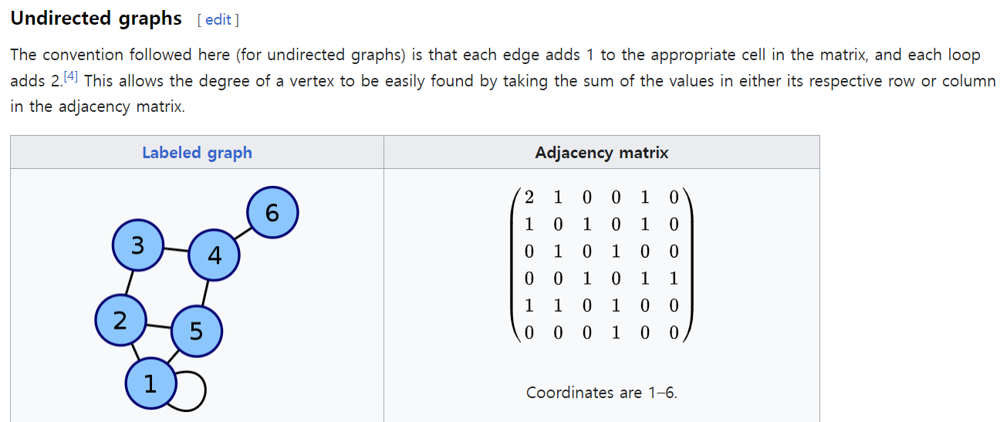
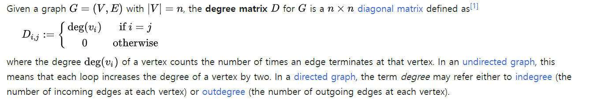
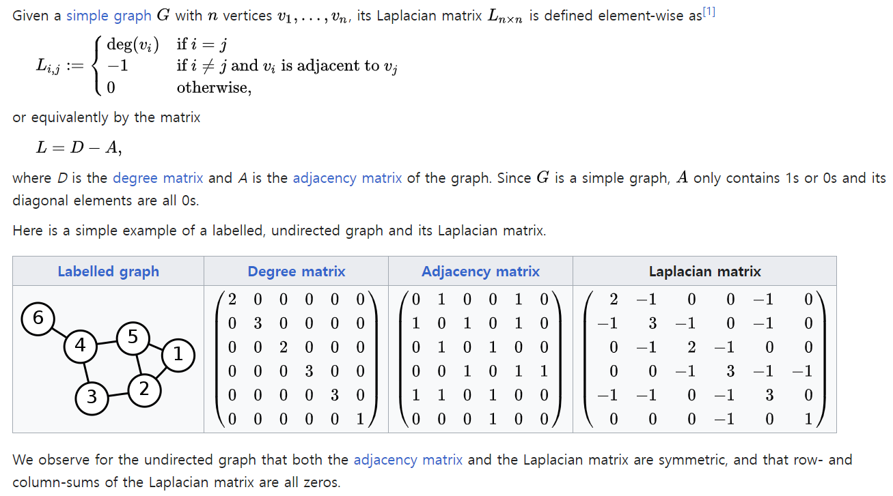
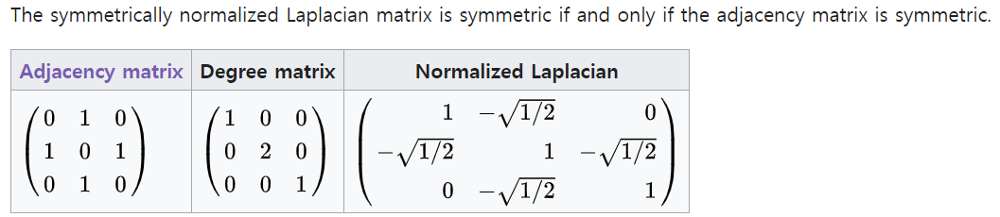

<!DOCTYPE html>
<html xmlns="http://www.w3.org/1999/xhtml" lang="en" xml:lang="en"><head>

<meta charset="utf-8">
<meta name="generator" content="quarto-1.2.335">

<meta name="viewport" content="width=device-width, initial-scale=1.0, user-scalable=yes">

<meta name="author" content="jiyun Lim">
<meta name="dcterms.date" content="2023-03-03">

<title>myblog - Ch2. Basics of Math and Graph</title>
<style>
code{white-space: pre-wrap;}
span.smallcaps{font-variant: small-caps;}
div.columns{display: flex; gap: min(4vw, 1.5em);}
div.column{flex: auto; overflow-x: auto;}
div.hanging-indent{margin-left: 1.5em; text-indent: -1.5em;}
ul.task-list{list-style: none;}
ul.task-list li input[type="checkbox"] {
  width: 0.8em;
  margin: 0 0.8em 0.2em -1.6em;
  vertical-align: middle;
}
pre > code.sourceCode { white-space: pre; position: relative; }
pre > code.sourceCode > span { display: inline-block; line-height: 1.25; }
pre > code.sourceCode > span:empty { height: 1.2em; }
.sourceCode { overflow: visible; }
code.sourceCode > span { color: inherit; text-decoration: inherit; }
div.sourceCode { margin: 1em 0; }
pre.sourceCode { margin: 0; }
@media screen {
div.sourceCode { overflow: auto; }
}
@media print {
pre > code.sourceCode { white-space: pre-wrap; }
pre > code.sourceCode > span { text-indent: -5em; padding-left: 5em; }
}
pre.numberSource code
  { counter-reset: source-line 0; }
pre.numberSource code > span
  { position: relative; left: -4em; counter-increment: source-line; }
pre.numberSource code > span > a:first-child::before
  { content: counter(source-line);
    position: relative; left: -1em; text-align: right; vertical-align: baseline;
    border: none; display: inline-block;
    -webkit-touch-callout: none; -webkit-user-select: none;
    -khtml-user-select: none; -moz-user-select: none;
    -ms-user-select: none; user-select: none;
    padding: 0 4px; width: 4em;
    color: #aaaaaa;
  }
pre.numberSource { margin-left: 3em; border-left: 1px solid #aaaaaa;  padding-left: 4px; }
div.sourceCode
  {   }
@media screen {
pre > code.sourceCode > span > a:first-child::before { text-decoration: underline; }
}
code span.al { color: #ff0000; font-weight: bold; } /* Alert */
code span.an { color: #60a0b0; font-weight: bold; font-style: italic; } /* Annotation */
code span.at { color: #7d9029; } /* Attribute */
code span.bn { color: #40a070; } /* BaseN */
code span.bu { color: #008000; } /* BuiltIn */
code span.cf { color: #007020; font-weight: bold; } /* ControlFlow */
code span.ch { color: #4070a0; } /* Char */
code span.cn { color: #880000; } /* Constant */
code span.co { color: #60a0b0; font-style: italic; } /* Comment */
code span.cv { color: #60a0b0; font-weight: bold; font-style: italic; } /* CommentVar */
code span.do { color: #ba2121; font-style: italic; } /* Documentation */
code span.dt { color: #902000; } /* DataType */
code span.dv { color: #40a070; } /* DecVal */
code span.er { color: #ff0000; font-weight: bold; } /* Error */
code span.ex { } /* Extension */
code span.fl { color: #40a070; } /* Float */
code span.fu { color: #06287e; } /* Function */
code span.im { color: #008000; font-weight: bold; } /* Import */
code span.in { color: #60a0b0; font-weight: bold; font-style: italic; } /* Information */
code span.kw { color: #007020; font-weight: bold; } /* Keyword */
code span.op { color: #666666; } /* Operator */
code span.ot { color: #007020; } /* Other */
code span.pp { color: #bc7a00; } /* Preprocessor */
code span.sc { color: #4070a0; } /* SpecialChar */
code span.ss { color: #bb6688; } /* SpecialString */
code span.st { color: #4070a0; } /* String */
code span.va { color: #19177c; } /* Variable */
code span.vs { color: #4070a0; } /* VerbatimString */
code span.wa { color: #60a0b0; font-weight: bold; font-style: italic; } /* Warning */
</style>


<script src="../../site_libs/quarto-nav/quarto-nav.js"></script>
<script src="../../site_libs/quarto-nav/headroom.min.js"></script>
<script src="../../site_libs/clipboard/clipboard.min.js"></script>
<script src="../../site_libs/quarto-search/autocomplete.umd.js"></script>
<script src="../../site_libs/quarto-search/fuse.min.js"></script>
<script src="../../site_libs/quarto-search/quarto-search.js"></script>
<meta name="quarto:offset" content="../../">
<script src="../../site_libs/quarto-html/quarto.js"></script>
<script src="../../site_libs/quarto-html/popper.min.js"></script>
<script src="../../site_libs/quarto-html/tippy.umd.min.js"></script>
<script src="../../site_libs/quarto-html/anchor.min.js"></script>
<link href="../../site_libs/quarto-html/tippy.css" rel="stylesheet">
<link href="../../site_libs/quarto-html/quarto-syntax-highlighting.css" rel="stylesheet" id="quarto-text-highlighting-styles">
<script src="../../site_libs/bootstrap/bootstrap.min.js"></script>
<link href="../../site_libs/bootstrap/bootstrap-icons.css" rel="stylesheet">
<link href="../../site_libs/bootstrap/bootstrap.min.css" rel="stylesheet" id="quarto-bootstrap" data-mode="light">
<script id="quarto-search-options" type="application/json">{
  "location": "navbar",
  "copy-button": false,
  "collapse-after": 3,
  "panel-placement": "end",
  "type": "overlay",
  "limit": 20,
  "language": {
    "search-no-results-text": "No results",
    "search-matching-documents-text": "matching documents",
    "search-copy-link-title": "Copy link to search",
    "search-hide-matches-text": "Hide additional matches",
    "search-more-match-text": "more match in this document",
    "search-more-matches-text": "more matches in this document",
    "search-clear-button-title": "Clear",
    "search-detached-cancel-button-title": "Cancel",
    "search-submit-button-title": "Submit"
  }
}</script>

  <script src="https://cdn.jsdelivr.net/npm/mathjax@3/es5/tex-chtml-full.js" type="text/javascript"></script>

<link rel="stylesheet" href="../../styles.css">
</head>

<body class="nav-sidebar docked nav-fixed">

<div id="quarto-search-results"></div>
  <header id="quarto-header" class="headroom fixed-top">
    <nav class="navbar navbar-expand-lg navbar-dark ">
      <div class="navbar-container container-fluid">
      <div class="navbar-brand-container">
    <a class="navbar-brand" href="../../index.html">
    <span class="navbar-title">myblog</span>
    </a>
  </div>
          <button class="navbar-toggler" type="button" data-bs-toggle="collapse" data-bs-target="#navbarCollapse" aria-controls="navbarCollapse" aria-expanded="false" aria-label="Toggle navigation" onclick="if (window.quartoToggleHeadroom) { window.quartoToggleHeadroom(); }">
  <span class="navbar-toggler-icon"></span>
</button>
          <div class="collapse navbar-collapse" id="navbarCollapse">
            <ul class="navbar-nav navbar-nav-scroll ms-auto">
  <li class="nav-item">
    <a class="nav-link active" href="../../about.html" aria-current="page">
 <span class="menu-text">About</span></a>
  </li>  
  <li class="nav-item compact">
    <a class="nav-link" href="https://github.com/pinkocto/mm"><i class="bi bi-github" role="img">
</i> 
 <span class="menu-text"></span></a>
  </li>  
</ul>
              <div id="quarto-search" class="" title="Search"></div>
          </div> <!-- /navcollapse -->
      </div> <!-- /container-fluid -->
    </nav>
  <nav class="quarto-secondary-nav" data-bs-toggle="collapse" data-bs-target="#quarto-sidebar" aria-controls="quarto-sidebar" aria-expanded="false" aria-label="Toggle sidebar navigation" onclick="if (window.quartoToggleHeadroom) { window.quartoToggleHeadroom(); }">
    <div class="container-fluid d-flex justify-content-between">
      <h1 class="quarto-secondary-nav-title">Ch2. Basics of Math and Graph</h1>
      <button type="button" class="quarto-btn-toggle btn" aria-label="Show secondary navigation">
        <i class="bi bi-chevron-right"></i>
      </button>
    </div>
  </nav>
</header>
<!-- content -->
<header id="title-block-header" class="quarto-title-block default page-columns page-full">
  <div class="quarto-title-banner page-columns page-full">
    <div class="quarto-title column-body">
      <h1 class="title d-none d-lg-block">Ch2. Basics of Math and Graph</h1>
                                <div class="quarto-categories">
                <div class="quarto-category">GNN</div>
                <div class="quarto-category">Linear Algebra</div>
              </div>
                  </div>
  </div>
    
  
  <div class="quarto-title-meta">

      <div>
      <div class="quarto-title-meta-heading">Author</div>
      <div class="quarto-title-meta-contents">
               <p>jiyun Lim </p>
            </div>
    </div>
      
      <div>
      <div class="quarto-title-meta-heading">Published</div>
      <div class="quarto-title-meta-contents">
        <p class="date">March 3, 2023</p>
      </div>
    </div>
    
      
    </div>
    
  
  </header><div id="quarto-content" class="quarto-container page-columns page-rows-contents page-layout-article page-navbar">
<!-- sidebar -->
  <nav id="quarto-sidebar" class="sidebar collapse sidebar-navigation docked overflow-auto">
      <div class="mt-2 flex-shrink-0 align-items-center">
        <div class="sidebar-search">
        <div id="quarto-search" class="" title="Search"></div>
        </div>
      </div>
    <div class="sidebar-menu-container"> 
    <ul class="list-unstyled mt-1">
        <li class="sidebar-item">
  <div class="sidebar-item-container"> 
  <a href="../../about.html" class="sidebar-item-text sidebar-link">About</a>
  </div>
</li>
        <li class="sidebar-item sidebar-item-section">
      <div class="sidebar-item-container"> 
            <a class="sidebar-item-text sidebar-link text-start" data-bs-toggle="collapse" data-bs-target="#quarto-sidebar-section-1" aria-expanded="true">Posts</a>
          <a class="sidebar-item-toggle text-start" data-bs-toggle="collapse" data-bs-target="#quarto-sidebar-section-1" aria-expanded="true">
            <i class="bi bi-chevron-right ms-2"></i>
          </a> 
      </div>
      <ul id="quarto-sidebar-section-1" class="collapse list-unstyled sidebar-section depth1 show">  
          <li class="sidebar-item sidebar-item-section">
      <div class="sidebar-item-container"> 
            <a class="sidebar-item-text sidebar-link text-start collapsed" data-bs-toggle="collapse" data-bs-target="#quarto-sidebar-section-2" aria-expanded="false">DNN</a>
          <a class="sidebar-item-toggle text-start collapsed" data-bs-toggle="collapse" data-bs-target="#quarto-sidebar-section-2" aria-expanded="false">
            <i class="bi bi-chevron-right ms-2"></i>
          </a> 
      </div>
      <ul id="quarto-sidebar-section-2" class="collapse list-unstyled sidebar-section depth2 ">  
          <li class="sidebar-item">
  <div class="sidebar-item-container"> 
  <a href="../../posts/DNN/2023-03-01-dnn1.html" class="sidebar-item-text sidebar-link">딥러닝 기초 (1)</a>
  </div>
</li>
          <li class="sidebar-item">
  <div class="sidebar-item-container"> 
  <a href="../../posts/DNN/2023-03-01-dnn2.html" class="sidebar-item-text sidebar-link">딥러닝 기초 (2)</a>
  </div>
</li>
      </ul>
  </li>
          <li class="sidebar-item sidebar-item-section">
      <div class="sidebar-item-container"> 
            <a class="sidebar-item-text sidebar-link text-start collapsed" data-bs-toggle="collapse" data-bs-target="#quarto-sidebar-section-3" aria-expanded="false">GCN</a>
          <a class="sidebar-item-toggle text-start collapsed" data-bs-toggle="collapse" data-bs-target="#quarto-sidebar-section-3" aria-expanded="false">
            <i class="bi bi-chevron-right ms-2"></i>
          </a> 
      </div>
      <ul id="quarto-sidebar-section-3" class="collapse list-unstyled sidebar-section depth2 ">  
          <li class="sidebar-item">
  <div class="sidebar-item-container"> 
  <a href="../../posts/GCN/2023-02-27-gcn-prac.html" class="sidebar-item-text sidebar-link">GCN Implementation</a>
  </div>
</li>
          <li class="sidebar-item">
  <div class="sidebar-item-container"> 
  <a href="../../posts/GCN/2023-02-21-gcn1.html" class="sidebar-item-text sidebar-link">Graph Convolutional Network</a>
  </div>
</li>
      </ul>
  </li>
          <li class="sidebar-item sidebar-item-section">
      <div class="sidebar-item-container"> 
            <a class="sidebar-item-text sidebar-link text-start" data-bs-toggle="collapse" data-bs-target="#quarto-sidebar-section-4" aria-expanded="true">GNN</a>
          <a class="sidebar-item-toggle text-start" data-bs-toggle="collapse" data-bs-target="#quarto-sidebar-section-4" aria-expanded="true">
            <i class="bi bi-chevron-right ms-2"></i>
          </a> 
      </div>
      <ul id="quarto-sidebar-section-4" class="collapse list-unstyled sidebar-section depth2 show">  
          <li class="sidebar-item">
  <div class="sidebar-item-container"> 
  <a href="../../posts/GNN/2023-03-04-gnn-intro.html" class="sidebar-item-text sidebar-link">1 GNN tuto1</a>
  </div>
</li>
          <li class="sidebar-item">
  <div class="sidebar-item-container"> 
  <a href="../../posts/GNN/2023-03-04-gnn2_guebin.html" class="sidebar-item-text sidebar-link">2 GNN tuto2</a>
  </div>
</li>
          <li class="sidebar-item">
  <div class="sidebar-item-container"> 
  <a href="../../posts/GNN/2023-03-04-gnn2.html" class="sidebar-item-text sidebar-link">2 GNN tuto2</a>
  </div>
</li>
          <li class="sidebar-item">
  <div class="sidebar-item-container"> 
  <a href="../../posts/GNN/2023-03-13-chap2.html" class="sidebar-item-text sidebar-link active">Ch2. Basics of Math and Graph</a>
  </div>
</li>
          <li class="sidebar-item">
  <div class="sidebar-item-container"> 
  <a href="../../posts/GNN/2023-03-03-gnn1.html" class="sidebar-item-text sidebar-link">Ch4. Vanilla Graph Neural Networks</a>
  </div>
</li>
      </ul>
  </li>
          <li class="sidebar-item sidebar-item-section">
      <div class="sidebar-item-container"> 
            <a class="sidebar-item-text sidebar-link text-start collapsed" data-bs-toggle="collapse" data-bs-target="#quarto-sidebar-section-5" aria-expanded="false">RNN</a>
          <a class="sidebar-item-toggle text-start collapsed" data-bs-toggle="collapse" data-bs-target="#quarto-sidebar-section-5" aria-expanded="false">
            <i class="bi bi-chevron-right ms-2"></i>
          </a> 
      </div>
      <ul id="quarto-sidebar-section-5" class="collapse list-unstyled sidebar-section depth2 ">  
          <li class="sidebar-item">
  <div class="sidebar-item-container"> 
  <a href="../../posts/RNN/2023-02-25-rnn1.html" class="sidebar-item-text sidebar-link">순환신경망 (1)</a>
  </div>
</li>
          <li class="sidebar-item">
  <div class="sidebar-item-container"> 
  <a href="../../posts/RNN/2023-02-25-rnn2.html" class="sidebar-item-text sidebar-link">순환신경망 (2)</a>
  </div>
</li>
          <li class="sidebar-item">
  <div class="sidebar-item-container"> 
  <a href="../../posts/RNN/2023-02-28-rnn3.html" class="sidebar-item-text sidebar-link">순환신경망 (3)</a>
  </div>
</li>
          <li class="sidebar-item">
  <div class="sidebar-item-container"> 
  <a href="../../posts/RNN/2023-02-28-rnn4.html" class="sidebar-item-text sidebar-link">순환신경망 (4)</a>
  </div>
</li>
          <li class="sidebar-item">
  <div class="sidebar-item-container"> 
  <a href="../../posts/RNN/2023-03-01-rnn5.html" class="sidebar-item-text sidebar-link">순환신경망 (5)</a>
  </div>
</li>
          <li class="sidebar-item">
  <div class="sidebar-item-container"> 
  <a href="../../posts/RNN/2023-03-01-rnn6.html" class="sidebar-item-text sidebar-link">순환신경망 (6)</a>
  </div>
</li>
      </ul>
  </li>
          <li class="sidebar-item sidebar-item-section">
      <div class="sidebar-item-container"> 
            <a class="sidebar-item-text sidebar-link text-start collapsed" data-bs-toggle="collapse" data-bs-target="#quarto-sidebar-section-6" aria-expanded="false">STGCN</a>
          <a class="sidebar-item-toggle text-start collapsed" data-bs-toggle="collapse" data-bs-target="#quarto-sidebar-section-6" aria-expanded="false">
            <i class="bi bi-chevron-right ms-2"></i>
          </a> 
      </div>
      <ul id="quarto-sidebar-section-6" class="collapse list-unstyled sidebar-section depth2 ">  
          <li class="sidebar-item sidebar-item-section">
      <div class="sidebar-item-container"> 
            <a class="sidebar-item-text sidebar-link text-start collapsed" data-bs-toggle="collapse" data-bs-target="#quarto-sidebar-section-7" aria-expanded="false">STGCN 공부</a>
          <a class="sidebar-item-toggle text-start collapsed" data-bs-toggle="collapse" data-bs-target="#quarto-sidebar-section-7" aria-expanded="false">
            <i class="bi bi-chevron-right ms-2"></i>
          </a> 
      </div>
      <ul id="quarto-sidebar-section-7" class="collapse list-unstyled sidebar-section depth3 ">  
          <li class="sidebar-item">
  <div class="sidebar-item-container"> 
  <a href="../../posts/STGCN/STGCN 공부/traffic_prediction.html" class="sidebar-item-text sidebar-link">Traffic Forecasting review</a>
  </div>
</li>
          <li class="sidebar-item">
  <div class="sidebar-item-container"> 
  <a href="../../posts/STGCN/STGCN 공부/Untitled.html" class="sidebar-item-text sidebar-link">Untitled</a>
  </div>
</li>
          <li class="sidebar-item">
  <div class="sidebar-item-container"> 
  <a href="../../posts/STGCN/STGCN 공부/2023-02-21-STGCN-tutorial1.html" class="sidebar-item-text sidebar-link">튜토리얼 따라가기1</a>
  </div>
</li>
          <li class="sidebar-item">
  <div class="sidebar-item-container"> 
  <a href="../../posts/STGCN/STGCN 공부/2023-02-23-stgcn-tutorial2.html" class="sidebar-item-text sidebar-link">튜토리얼 따라가기2</a>
  </div>
</li>
      </ul>
  </li>
          <li class="sidebar-item sidebar-item-section">
      <div class="sidebar-item-container"> 
            <a class="sidebar-item-text sidebar-link text-start collapsed" data-bs-toggle="collapse" data-bs-target="#quarto-sidebar-section-8" aria-expanded="false">튜토리얼</a>
          <a class="sidebar-item-toggle text-start collapsed" data-bs-toggle="collapse" data-bs-target="#quarto-sidebar-section-8" aria-expanded="false">
            <i class="bi bi-chevron-right ms-2"></i>
          </a> 
      </div>
      <ul id="quarto-sidebar-section-8" class="collapse list-unstyled sidebar-section depth3 ">  
          <li class="sidebar-item">
  <div class="sidebar-item-container"> 
  <a href="../../posts/STGCN/튜토리얼/2022-12-29-STGCN-tutorial.html" class="sidebar-item-text sidebar-link">STGCN 튜토리얼</a>
  </div>
</li>
          <li class="sidebar-item">
  <div class="sidebar-item-container"> 
  <a href="../../posts/STGCN/튜토리얼/2022-12-30-STGCN-Toy Example.html" class="sidebar-item-text sidebar-link">Toy Example</a>
  </div>
</li>
      </ul>
  </li>
      </ul>
  </li>
          <li class="sidebar-item sidebar-item-section">
      <div class="sidebar-item-container"> 
            <a class="sidebar-item-text sidebar-link text-start collapsed" data-bs-toggle="collapse" data-bs-target="#quarto-sidebar-section-9" aria-expanded="false">Tip</a>
          <a class="sidebar-item-toggle text-start collapsed" data-bs-toggle="collapse" data-bs-target="#quarto-sidebar-section-9" aria-expanded="false">
            <i class="bi bi-chevron-right ms-2"></i>
          </a> 
      </div>
      <ul id="quarto-sidebar-section-9" class="collapse list-unstyled sidebar-section depth2 ">  
          <li class="sidebar-item">
  <div class="sidebar-item-container"> 
  <a href="../../posts/Tip/2023-02-20-tips.html" class="sidebar-item-text sidebar-link">download files from Github</a>
  </div>
</li>
          <li class="sidebar-item">
  <div class="sidebar-item-container"> 
  <a href="../../posts/Tip/2023-03-09-github-link.html" class="sidebar-item-text sidebar-link">github 연동</a>
  </div>
</li>
          <li class="sidebar-item">
  <div class="sidebar-item-container"> 
  <a href="../../posts/Tip/2023-02-24-tips.html" class="sidebar-item-text sidebar-link">Julia 연동</a>
  </div>
</li>
          <li class="sidebar-item">
  <div class="sidebar-item-container"> 
  <a href="../../posts/Tip/2023-02-28-link.html" class="sidebar-item-text sidebar-link">some links</a>
  </div>
</li>
          <li class="sidebar-item">
  <div class="sidebar-item-container"> 
  <a href="../../posts/Tip/2023-03-09-linux.html" class="sidebar-item-text sidebar-link">리눅스 명령어</a>
  </div>
</li>
      </ul>
  </li>
      </ul>
  </li>
        <li class="sidebar-item sidebar-item-section">
      <div class="sidebar-item-container"> 
            <a class="sidebar-item-text sidebar-link text-start" data-bs-toggle="collapse" data-bs-target="#quarto-sidebar-section-10" aria-expanded="true">Study</a>
          <a class="sidebar-item-toggle text-start" data-bs-toggle="collapse" data-bs-target="#quarto-sidebar-section-10" aria-expanded="true">
            <i class="bi bi-chevron-right ms-2"></i>
          </a> 
      </div>
      <ul id="quarto-sidebar-section-10" class="collapse list-unstyled sidebar-section depth1 show">  
          <li class="sidebar-item">
  <div class="sidebar-item-container"> 
  <a href="../../study/2023-03-14-eigenvalue.html" class="sidebar-item-text sidebar-link">eigenvalue &amp; eigenvector</a>
  </div>
</li>
          <li class="sidebar-item">
  <div class="sidebar-item-container"> 
  <a href="../../study/2023-03-14-pca.html" class="sidebar-item-text sidebar-link">PCA</a>
  </div>
</li>
      </ul>
  </li>
    </ul>
    </div>
</nav>
<!-- margin-sidebar -->
    <div id="quarto-margin-sidebar" class="sidebar margin-sidebar">
        <nav id="TOC" role="doc-toc" class="toc-active">
    <h2 id="toc-title">On this page</h2>
   
  <ul>
  <li><a href="#linear-algebra" id="toc-linear-algebra" class="nav-link active" data-scroll-target="#linear-algebra">2.1 Linear Algebra</a>
  <ul class="collapse">
  <li><a href="#basic-concepts" id="toc-basic-concepts" class="nav-link" data-scroll-target="#basic-concepts">2.1.1 Basic Concepts</a>
  <ul class="collapse">
  <li><a href="#determinant" id="toc-determinant" class="nav-link" data-scroll-target="#determinant">Determinant</a></li>
  <li><a href="#hadamard-product" id="toc-hadamard-product" class="nav-link" data-scroll-target="#hadamard-product">Hadamard product</a></li>
  </ul></li>
  <li><a href="#eigendecomposition" id="toc-eigendecomposition" class="nav-link" data-scroll-target="#eigendecomposition">2.1.2 Eigendecomposition</a></li>
  <li><a href="#singular-value-decomposition-svd" id="toc-singular-value-decomposition-svd" class="nav-link" data-scroll-target="#singular-value-decomposition-svd">2.1.3 Singular Value Decomposition (SVD)</a></li>
  </ul></li>
  <li><a href="#probability-theory" id="toc-probability-theory" class="nav-link" data-scroll-target="#probability-theory">2.2 Probability Theory</a>
  <ul class="collapse">
  <li><a href="#probability-distributions" id="toc-probability-distributions" class="nav-link" data-scroll-target="#probability-distributions">2.2.2 probability distributions</a></li>
  </ul></li>
  <li><a href="#graph-theory" id="toc-graph-theory" class="nav-link" data-scroll-target="#graph-theory">2.3 Graph Theory</a>
  <ul class="collapse">
  <li><a href="#basic-concepts-1" id="toc-basic-concepts-1" class="nav-link" data-scroll-target="#basic-concepts-1">2.3.1 Basic Concepts</a></li>
  <li><a href="#algebra-representation-of-graphs" id="toc-algebra-representation-of-graphs" class="nav-link" data-scroll-target="#algebra-representation-of-graphs">2.3.2 Algebra Representation of Graphs</a>
  <ul class="collapse">
  <li><a href="#adjacency-matrix" id="toc-adjacency-matrix" class="nav-link" data-scroll-target="#adjacency-matrix"><code>1</code> Adjacency matrix</a></li>
  <li><a href="#degree-matrix" id="toc-degree-matrix" class="nav-link" data-scroll-target="#degree-matrix"><code>2</code> Degree matrix</a></li>
  <li><a href="#laplacian-matrix" id="toc-laplacian-matrix" class="nav-link" data-scroll-target="#laplacian-matrix"><code>3</code> Laplacian matrix</a></li>
  <li><a href="#symmetric-normalized-laplacian" id="toc-symmetric-normalized-laplacian" class="nav-link" data-scroll-target="#symmetric-normalized-laplacian"><code>4</code> Symmetric normalized Laplacian</a></li>
  <li><a href="#random-walk-normalized-laplacian" id="toc-random-walk-normalized-laplacian" class="nav-link" data-scroll-target="#random-walk-normalized-laplacian"><code>5</code> Random walk normalized Laplacian</a></li>
  <li><a href="#ref" id="toc-ref" class="nav-link" data-scroll-target="#ref">Ref</a></li>
  </ul></li>
  </ul></li>
  </ul>
</nav>
    </div>
<!-- main -->
<main class="content quarto-banner-title-block" id="quarto-document-content">


<section id="linear-algebra" class="level1">
<h1>2.1 Linear Algebra</h1>
<p>In this section, we review some basic concepts and calculations in linear algebra which are necessary for understanding the rest of book.</p>
<section id="basic-concepts" class="level2">
<h2 class="anchored" data-anchor-id="basic-concepts">2.1.1 Basic Concepts</h2>
<p><code>-</code> Scalar: A number</p>
<p><code>-</code> Vector: A column of ordered numbers, which can be expressed as the following:</p>
<p><span class="math display">\[ \bf{x} = \begin{bmatrix} x_1 \\ x_2 \\ \vdots \\ x_n \end{bmatrix}\]</span></p>
<ul>
<li>The <strong>norm</strong> of a vector measures its length. (벡터의 길이를 측정한 값.)</li>
</ul>
<p><code>-</code> <span class="math inline">\(L_p\)</span> norm</p>
<p><span class="math display">\[||\bf{x}||_p = (\sum_{i=1}^n |x_i|^p)^\frac{1}{p}\]</span></p>
<p><span class="math inline">\(L_1 \text{norm}, L_2 \text{norm} \text{ and } L_{\infty} \text{norm}\)</span> are often used in ML.</p>
<p><code>-</code> <span class="math inline">\(L_1\)</span> norm</p>
<p><span class="math display">\[||x||_1 = \sum_{i=1}^n|x_i|\]</span></p>
<p><code>-</code> <span class="math inline">\(L_2\)</span> norm</p>
<p>유클리드 공간 <span class="math inline">\(\mathbb{R}^n\)</span> 에서 <span class="math inline">\(L_2\)</span> norm은 다음식과 같이 벡터의 길이를 재는데 사용된다.</p>
<p><span class="math display">\[||x||_2 = \sqrt{\sum_{i=1}^n x_i^2}\]</span></p>
<p><code>-</code> <span class="math inline">\(L_{\infty}\)</span> norm</p>
<p><span class="math inline">\(L_{\infty}\)</span> 은 max norm 이라고도 불리며 다음과 같다.</p>
<p><span class="math display">\[||x||_{\infty} = \underset{i} {max} |x_i|\]</span></p>
<p><span class="math inline">\(L_p\)</span> norm 을 사용해서 같은 선형 공간에 있는 두 벡터 <span class="math inline">\(\bf{x}_1, \bf{x}_2\)</span> 사이의 거리를 잴 수 있다.</p>
<p><span class="math display">\[ D_p(\bf{x}_1, \bf{x}_2) = ||\bf{x}_1 - \bf{x}_2||_p\]</span></p>
<p>벡터집합 <span class="math inline">\(\bf{x}_1, \bf{x}_2, \dots, \bf{x}_m\)</span>이 일차독립이라는 말은 다음 식을 만족하는 <span class="math inline">\(0\)</span>이 아닌 스칼라 집합 <span class="math inline">\(\lambda_1, \lambda_2, \dots, \lambda_m\)</span> 이 존재하지 않는다는 말과 동치이다.</p>
<p><span class="math display">\[\lambda_1\bf{x}_1 + \lambda_2 \bf{x}_2 + \dots + \lambda_m\bf{x}_m = 0\]</span></p>
<p><code>-</code> <strong>행렬(matrix)</strong> : A two-dimensional array, which can be expressed as following.</p>
<p><span class="math display">\[ \bf{A} = \begin{bmatrix} a_{11} &amp;  a_{12} &amp; \dots &amp; a_{1n} \\
a_{21} &amp; a_{22} &amp; \dots &amp; a_{2n} \\
\vdots &amp; \vdots &amp; \ddots &amp; \vdots \\
a_{m1} &amp; a_{m2} &amp; \dots &amp; a_{mn}
\end{bmatrix}\]</span></p>
<p>여기서 <span class="math inline">\(\bf{A} \in \mathbb{R}^{m\times n}\)</span>.</p>
<p>주어진 두 행렬 <span class="math inline">\(\bf{A} \in \mathbb{R}^{m\times n}, \bf{B} \in \mathbb{R}^{n\times p}\)</span> 에 대해 행렬곱(matrix product) <span class="math inline">\(\bf{A} \bf{B}\)</span>는 다음을 만족하는 행렬 <span class="math inline">\(\bf{C} \in \mathbb{R}^{m\times p}\)</span> 이다.</p>
<p><span class="math display">\[ \bf{c}_{ij} =a_{i1}b_{1j} + a_{i2}b_{2j} + \dots + a_{ip} b_{pj} =  \sum_{k=1}^n \bf{a}_{ik} \bf{b}_{kj}\]</span></p>
<p><span class="math inline">\(\bf{AB}\)</span>는 <span class="math inline">\(\bf{A}\)</span> 의 <span class="math inline">\(i\)</span> 번쨰 행과 <span class="math inline">\(\bf{b}\)</span>의 <span class="math inline">\(j\)</span>번째 열에 대응되는 요소들의 곱을 합한 것이다. <span class="math inline">\(\bf{A}\)</span>의 열의개수와 행렬 <span class="math inline">\(\bf{B}\)</span>의 행의 개수가 같아야만 곱이 정의된다.</p>
<p>행렬의 곱셈은 결합법칙(Associative Law)은 성립하지만 교환법칙(Commutative Law)은 성립하지 않는다. (곱셈 자체가 정의되지 않을 수도 있음)</p>
<p>수학적으로 표현하면 다음과 같다. (행렬 <span class="math inline">\(\bf{A, B, C}\)</span>의 차원이 잘 맞는다고 가정)</p>
<p><span class="math display">\[(\bf{A}\bf{B})\bf{C} = \bf{A}(\bf{B}\bf{C})\]</span></p>
<p>위 식은 항상 참이지만 다음 식은 참이 아닐 때도 있다.</p>
<p><span class="math display">\[\bf{A}\bf{B} = \bf{B}\bf{A}\]</span></p>
<div class="cell" data-execution_count="17">
<div class="sourceCode cell-code" id="cb1"><pre class="sourceCode numberSource python number-lines code-with-copy"><code class="sourceCode python"><span id="cb1-1"><a href="#cb1-1"></a><span class="im">import</span> numpy <span class="im">as</span> np</span>
<span id="cb1-2"><a href="#cb1-2"></a>A <span class="op">=</span> np.matrix([[<span class="dv">1</span>,<span class="dv">2</span>],[<span class="dv">3</span>,<span class="dv">4</span>]])</span>
<span id="cb1-3"><a href="#cb1-3"></a>B <span class="op">=</span> np.matrix([[<span class="op">-</span><span class="dv">1</span>,<span class="dv">5</span>],[<span class="dv">6</span>,<span class="op">-</span><span class="dv">2</span>]])</span></code><button title="Copy to Clipboard" class="code-copy-button"><i class="bi"></i></button></pre></div>
</div>
<div class="cell" data-execution_count="20">
<div class="sourceCode cell-code" id="cb2"><pre class="sourceCode numberSource python number-lines code-with-copy"><code class="sourceCode python"><span id="cb2-1"><a href="#cb2-1"></a>A<span class="op">@</span>B, B<span class="op">@</span>A</span></code><button title="Copy to Clipboard" class="code-copy-button"><i class="bi"></i></button></pre></div>
<div class="cell-output cell-output-display" data-execution_count="20">
<pre><code>(matrix([[11,  1],
         [21,  7]]),
 matrix([[14, 18],
         [ 0,  4]]))</code></pre>
</div>
</div>
<section id="determinant" class="level3">
<h3 class="anchored" data-anchor-id="determinant">Determinant</h3>
<div class="quarto-figure quarto-figure-center">
<figure class="figure">
<p></p>
<p></p><figcaption class="figure-caption">image.png</figcaption><p></p>
</figure>
</div>
<p><span class="math inline">\(n\times n\)</span> 정사각행렬 <span class="math inline">\(\bf{A}\)</span> 에 대해 행렬식(|<span class="math inline">\(\bf{A}\)</span>|) 은 다음과 같이 정의한다.</p>
<p><span class="math display">\[ \text{det} (\bf{A}) = \sum_{k_1 k_2 \dots k_n} (-1)^{\tau (k_1 k_2 \dots k_n)}a_{1 k_1}a_{2 k_2}\dots a_{n k_n}\]</span></p>
<p>where <span class="math inline">\(k_1k_2\dots k_n\)</span> is a permutation of <span class="math inline">\(1,2,\dots,n\)</span> and <span class="math inline">\(\tau(k_1 k_2 \dots k_n)\)</span> is the <strong>inversion number</strong> of the permutation <span class="math inline">\(k_1 k_2 \dots k_n\)</span>, which is the number of <strong>inverted sequence</strong> in the permutation.</p>
<p>If matrix <span class="math inline">\(\bf{A}\)</span> is a square matrix, which means that <span class="math inline">\(m = n\)</span>, the <strong>inverse matrix</strong> of <span class="math inline">\(\bf{A}\)</span> (denoted as <span class="math inline">\(\bf{A}^{-1}\)</span>) satisfies that as A</p>
<p><span class="math display">\[\bf{A}^{-1} \bf{A} = \bf{I}\]</span></p>
<p>where <span class="math inline">\(\bf{I}\)</span> is the <span class="math inline">\(n\times n\)</span> identity matrix. <span class="math inline">\(\bf{A}^{-1}\)</span> exists if and only if <span class="math inline">\(|\bf{A}|\neq 0\)</span></p>
<p>The <strong>transpose</strong> of matrix <span class="math inline">\(\bf{A}\)</span> is represented as <span class="math inline">\(\bf{A}^\top\)</span>, where</p>
<p><span class="math display">\[\bf{A}_{ij}^\top = \bf{A}_{ji}\]</span></p>
</section>
<section id="hadamard-product" class="level3">
<h3 class="anchored" data-anchor-id="hadamard-product">Hadamard product</h3>
<p>ref: https://levelup.gitconnected.com/calculate-hadamard-product-using-python-linear-algebra-46564a22c03d</p>
<p>행렬 간의 곱으로 자주 사용되는 방법은 <strong>아다마르 곱(Hadamard product)</strong> 이다.</p>
<p><strong><em>elemnet-wise multiplication, and not the multiplication</em></strong></p>
<p>선형대수학에서 아다마르곱은 같은 크기의 두 행렬의 각 성분을 곱하는 연산이다. 즉, 일반 행렬곱은 <span class="math inline">\(m\times n\)</span> 과 <span class="math inline">\(n \times p\)</span>의 꼴의 두 행렬을 곱하지만, 아다마르 곱은 <span class="math inline">\(m\times n\)</span>과 <span class="math inline">\(m \times n\)</span> 꼴의 두 행렬을 곱한다. 기호는 <span class="math inline">\(\bigcirc\)</span></p>
<p>두 행렬 <span class="math inline">\(\bf{A} \in \mathbb{R}^{m\times n}, \bf{B} \in \mathbb{R}^{m\times n}\)</span> 의 하다마드 곱은</p>
<p><span class="math display">\[\bf{C}_{ij} = \bf{A}_{ij} \bf{B}_{ij}\]</span></p>
<p>인 행렬 <span class="math inline">\(\bf{C} \in \mathbb{R}^{m\times n}\)</span> 이다.</p>
<p>Let’s consider two sample matrices <span class="math inline">\(\bf{A}\)</span> and <span class="math inline">\(\bf{B}\)</span></p>
<p><span class="math display">\[\bf{A} = \begin{bmatrix}
a_{11} &amp; a_{12} &amp; a_{13} \\
a_{21} &amp; a_{22} &amp; a_{23} \\
a_{31} &amp; a_{32} &amp; a_{33} \\
\end{bmatrix}\]</span></p>
<p><span class="math display">\[\bf{B} = \begin{bmatrix}
b_{11} &amp; b_{12} &amp; b_{13} \\
b_{21} &amp; b_{22} &amp; b_{23} \\
b_{31} &amp; b_{32} &amp; b_{33} \\
\end{bmatrix}\]</span></p>
<p>Calculating the Hadamard product (element-wise multiplication)</p>
<p><span class="math display">\[\bf{C} = \bf{A} \circ \bf{B} = \begin{bmatrix}
a_{11} &amp; a_{12} &amp; a_{13} \\
a_{21} &amp; a_{22} &amp; a_{23} \\
a_{31} &amp; a_{32} &amp; a_{33} \\
\end{bmatrix} \circ \begin{bmatrix}
b_{11} &amp; b_{12} &amp; b_{13} \\
b_{21} &amp; b_{22} &amp; b_{23} \\
b_{31} &amp; b_{32} &amp; b_{33} \\
\end{bmatrix} =
\begin{bmatrix}
a_{11}b_{11} &amp; a_{12}b_{12} &amp; a_{13}b_{13} \\
a_{21}b_{21} &amp; a_{22}b_{22} &amp; a_{23}b_{23} \\
a_{31}b_{31} &amp; a_{32}b_{32} &amp; a_{33}b_{33} \\
\end{bmatrix}\]</span></p>
<p>(예제)</p>
<p><span class="math inline">\(\bf{A} = \begin{bmatrix} 1 &amp; 6 \\ 2 &amp; 3\end{bmatrix}, \space \bf{B} = \begin{bmatrix} 5 &amp; 1 \\ 3 &amp; 2\end{bmatrix}\)</span></p>
<p><span class="math inline">\(\bf{A} \circ \bf{B} = \begin{bmatrix} 1 &amp; 6 \\ 2 &amp; 3\end{bmatrix} \circ \begin{bmatrix} 5 &amp; 1 \\ 3 &amp; 2\end{bmatrix} = \begin{bmatrix} 1\times 5 &amp; 6 \times 1 \\ 2\times 3 &amp; 3\times 2\end{bmatrix} = \begin{bmatrix} 5 &amp; 6 \\ 6 &amp; 6\end{bmatrix}\)</span></p>
<div class="cell" data-execution_count="27">
<div class="sourceCode cell-code" id="cb4"><pre class="sourceCode numberSource python number-lines code-with-copy"><code class="sourceCode python"><span id="cb4-1"><a href="#cb4-1"></a>A <span class="op">=</span> np.array([<span class="dv">1</span>,<span class="dv">6</span>,<span class="dv">2</span>,<span class="dv">3</span>]).reshape(<span class="dv">2</span>,<span class="dv">2</span>)</span>
<span id="cb4-2"><a href="#cb4-2"></a>B <span class="op">=</span> np.array([<span class="dv">5</span>,<span class="dv">1</span>,<span class="dv">3</span>,<span class="dv">2</span>]).reshape(<span class="dv">2</span>,<span class="dv">2</span>)</span>
<span id="cb4-3"><a href="#cb4-3"></a>A, B</span></code><button title="Copy to Clipboard" class="code-copy-button"><i class="bi"></i></button></pre></div>
<div class="cell-output cell-output-display" data-execution_count="27">
<pre><code>(array([[1, 6],
        [2, 3]]),
 array([[5, 1],
        [3, 2]]))</code></pre>
</div>
</div>
<div class="cell" data-execution_count="29">
<div class="sourceCode cell-code" id="cb6"><pre class="sourceCode numberSource python number-lines code-with-copy"><code class="sourceCode python"><span id="cb6-1"><a href="#cb6-1"></a>C <span class="op">=</span> np.multiply(A, B)</span>
<span id="cb6-2"><a href="#cb6-2"></a><span class="bu">print</span>(C)</span></code><button title="Copy to Clipboard" class="code-copy-button"><i class="bi"></i></button></pre></div>
<div class="cell-output cell-output-stdout">
<pre><code>[[5 6]
 [6 6]]</code></pre>
</div>
</div>
<p><code>-</code> 텐서(tensor): 임의의 차원을 갖는 행렬을 말한다. 대부분의 행렬 연산은 텐서에도 적용할 수 있다.</p>
</section>
</section>
<section id="eigendecomposition" class="level2">
<h2 class="anchored" data-anchor-id="eigendecomposition">2.1.2 Eigendecomposition</h2>
<p><span class="math inline">\(\bf{A}\)</span> 를 <span class="math inline">\(\mathbb{R}^{n \times n}\)</span>에 속한 행렬이라고 하자.</p>
<p><span class="math display">\[\bf{A}\bf{v} = \lambda \bf{v}\]</span></p>
<p>이 때 스칼라 <span class="math inline">\(\lambda\)</span>를 고유벡터 <span class="math inline">\(\bf{v}\)</span>에 대응되는 행렬 <span class="math inline">\(\bf{A}\)</span>의 고윳값(eigenvalue)이라고 부른다. 고유벡터 <span class="math inline">\(\{\bf{v}_1, \bf{v}_2, \bf{v}_3, \dots, \bf{v}_n \}\)</span> 이 행렬<span class="math inline">\(\bf{A}\)</span>의 일차독립인 고유벡터이고 <span class="math inline">\(\{\lambda_1, \lambda_2,\dots, \lambda_n\}\)</span>이 대응되는 고윳값일 때 다음이 성립한다.</p>
<p><span class="math display">\[\bf{A} \begin{bmatrix} \bf{v}_1 &amp; \bf{v}_2 &amp; \dots &amp; \bf{v}_n  \end{bmatrix} = \begin{bmatrix} \bf{v}_1 &amp; \bf{v}_2 &amp; \dots &amp; \bf{v}_n \end{bmatrix} \begin{bmatrix} \lambda_1 &amp; &amp; &amp; \\ &amp; \lambda_2 &amp; &amp;  \\ &amp; &amp; \ddots \\ &amp; &amp; &amp; \lambda_n \end{bmatrix}\]</span></p>
<p><span class="math inline">\(\bf{V} = [\bf{v}_1 \bf{v}_2 \dots \bf{v}_n]\)</span> 이라고 하자. 그러면 <span class="math inline">\(\bf{V}\)</span> 가 가역행렬(invertible matrix)임은 자명하다. 행렬<span class="math inline">\(\bf{A}\)</span>의 고유분해(eigendecomposition)는 다음과 같다.</p>
<p><span class="math display">\[\bf{A} = \bf{V}diag(\lambda)\bf{V}^{-1}\]</span></p>
<p>다음과 같은 형태로도 표현할 수 있다.</p>
<p><span class="math display">\[\bf{A} = \sum_{i=1}^n \lambda_i \bf{v}_i \bf{v}_i^\top\]</span></p>
<p>행렬이 일차독립인 고유벡터 <span class="math inline">\(n\)</span>를 갖고 있지 않을 수도 있기 때문에 모든 정사각행렬이 대각화가 가능한 것은 아니다. 모든 real symmetric matrix는 고유분해(eigendecomposition)가 가능하다.</p>
</section>
<section id="singular-value-decomposition-svd" class="level2">
<h2 class="anchored" data-anchor-id="singular-value-decomposition-svd">2.1.3 Singular Value Decomposition (SVD)</h2>
<ul>
<li>ref: https://numpy.org/doc/stable/reference/generated/numpy.linalg.svd.html</li>
</ul>
<p>고유분해는 특정 행렬(정사각행렬)에만 적용 가능하기 때문에 모든 행렬에 적용할 수 있는 특잇값 분해를 소개한다.</p>
<p>먼저 특잇값(singular value)의 개념에 대해 얘기해보자. <span class="math inline">\(r\)</span>이 <span class="math inline">\(\bf{A}\bf{A}^\top\)</span> 의 차수일 떄 <span class="math inline">\(1\leq i \leq r\)</span>에 대해 <span class="math inline">\(\bf{v}_i\)</span>는 <span class="math inline">\(\sigma_i^2\)</span>에 대응하는 <span class="math inline">\(\bf{A}^\top \bf{A}\)</span>의 고유벡터임을 만족하는 <span class="math inline">\(r\)</span>개의 양수 <span class="math inline">\(\sigma_1 \geq \sigma_2 \geq \dots \geq \sigma_r &gt; 0\)</span>가 존재한다. 참고로 <span class="math inline">\(\bf{v}_1, \bf{v}_2, \dots, \bf{v}_r\)</span>은 일차독립이다.</p>
<p>이런 <span class="math inline">\(r\)</span>개의 양수 <span class="math inline">\(\sigma_1, \sigma_2, \dots, \sigma_r\)</span>을 <span class="math inline">\(\bf{A}\)</span>의 특잇값이라고 부른다. 이때 특잇값 분해는 다음과 같이 정의된다.</p>
<p><span class="math display">\[\bf{A} = U\Sigma V^\top\]</span></p>
<p>여기서 <span class="math inline">\(\bf{U} \in \mathbb{R}^{m \times n}\)</span>, <span class="math inline">\(\bf{V}\)</span>는 <span class="math inline">\(n \times n\)</span> 직교행렬(orhodgonal matrix), <span class="math inline">\(\Sigma\)</span>는 다음과 같이 정의된 <span class="math inline">\(m\times n\)</span> 행렬이다.</p>
<p><span class="math display">\[\Sigma_{ij} =
\begin{cases}
\sigma_i &amp; i=j\leq r \\
0 &amp; otherwise.
\end{cases}\]</span></p>
<p><span class="math inline">\(\bf{U}\)</span>의 열벡터(column vector)는 <span class="math inline">\(\bf{A}\bf{A}^\top\)</span> 의 고유벡터(eigenvector)이고, <span class="math inline">\(\bf{A}^\top \bf{A}\)</span>의 고유벡터는 <span class="math inline">\(\bf{V}\)</span>의 열벡터로 만들어진다.</p>
</section>
</section>
<section id="probability-theory" class="level1">
<h1>2.2 Probability Theory</h1>
<section id="probability-distributions" class="level2">
<h2 class="anchored" data-anchor-id="probability-distributions">2.2.2 probability distributions</h2>
<p>Probability distributions describe the probability of a random variable or several random variables on every state. Several distributions that are useful in the area of machine learning are listed as follows.</p>
<p><code>-</code> <strong>Gaussian distribution</strong></p>
<p>it is also known as <strong>normal distribution</strong> and can be expressed as:</p>
<p><span class="math display">\[N(x|\mu,\sigma^2) = \sqrt{\frac{1}{2\pi\sigma^2}}\exp \big(-\frac{1}{2\sigma^2}(x-\mu)^2\big)\]</span></p>
<p>where <span class="math inline">\(\mu\)</span> is the mean of variable <span class="math inline">\(x\)</span> and <span class="math inline">\(\sigma^2\)</span> is the variance.</p>
<p><code>-</code> <strong>Bernoulli distribution</strong></p>
<p>random variable <span class="math inline">\(X\)</span> can either be <span class="math inline">\(0\)</span> or <span class="math inline">\(1\)</span>, with a probability <span class="math inline">\(P(X=1)=p\)</span>. Then the distribution function is</p>
<p><span class="math display">\[P(X=x) = p^x(1-p)^{1-x}, x\in \{0,1\}\]</span></p>
<p>It is quite obvious that <span class="math inline">\(E(X) = p\)</span> and <span class="math inline">\(Var(X) = p(1-p)\)</span>.</p>
<p><code>-</code> <strong>Laplace distribution</strong></p>
<p>the Laplace distribution is described as</p>
<p><span class="math display">\[P(x|\mu,b) = \frac{1}{2b}\exp\big(-\frac{|x-\mu|}{b}\big)\]</span></p>
</section>
</section>
<section id="graph-theory" class="level1">
<h1>2.3 Graph Theory</h1>
<p>Graphs are the basic subjects in the study of GNNs. Therefore, to get a comprehensive understanding of GNN, the fundamental graph theory is required</p>
<section id="basic-concepts-1" class="level2">
<h2 class="anchored" data-anchor-id="basic-concepts-1">2.3.1 Basic Concepts</h2>
<p>그래프는 <span class="math inline">\(G = (V, E)\)</span>로 나타내며, <span class="math inline">\(V\)</span>는 <strong>vertices</strong>의 집합, <span class="math inline">\(E\)</span>는 <strong>edges</strong>의 집합이다.</p>
<ul>
<li><p>edge <span class="math inline">\(e=u,v\)</span>는 두 끝점(endpoint) <span class="math inline">\(u\)</span>와 <span class="math inline">\(v\)</span>를 가지며 <span class="math inline">\(e\)</span>에 의해 연결(join)된다. 이 경우 <span class="math inline">\(u\)</span>는 <span class="math inline">\(v\)</span>의 <strong>이웃(neighbor)</strong> 이라고 말하고 두 vertices는 <strong>adjacent(인접하다)</strong> 고 말한다.</p></li>
<li><p>edge는 방향이 있을수도 있고 없을 수도 있다. 그래프에 속한 모든 에지의 방향이 있는 경우 <strong>directed graph</strong>라고 말하고, 없는 경우에는 <strong>undirected graph</strong>라고 말한다.</p></li>
<li><p>The degree of vertice <span class="math inline">\(v\)</span>, denoted by <span class="math inline">\(d(v)\)</span>, is the number of edges connected with <span class="math inline">\(v\)</span>.</p></li>
</ul>
</section>
<section id="algebra-representation-of-graphs" class="level2">
<h2 class="anchored" data-anchor-id="algebra-representation-of-graphs">2.3.2 Algebra Representation of Graphs</h2>
<p>There are a few useful algebra representations for graphs, which are listed as follows.</p>
<ul>
<li>ref: https://en.wikipedia.org/wiki/Laplacian_matrix#Random_walk_normalized_Laplacian</li>
</ul>
<section id="adjacency-matrix" class="level3">
<h3 class="anchored" data-anchor-id="adjacency-matrix"><code>1</code> Adjacency matrix</h3>
<p>for a simple graph <span class="math inline">\(G = (V,E)\)</span> with n-vertices, it can be described by and adjacency matrix <span class="math inline">\(\bf{A}\in \mathbb{R}^{n\times n}\)</span>, where</p>
<p><span class="math display">\[\bf{A}_{ij} =
\begin{cases}
1  &amp; {v_i, v_j} \in E \text{ and } i\neq j , \\
0 &amp; \text{otherwise.}
\end{cases}\]</span></p>
<p>It is obvious that such matrix is a symmetric matrix when <span class="math inline">\(G\)</span> is an undirected graph.</p>
<div class="quarto-figure quarto-figure-center">
<figure class="figure">
<p></p>
<p></p><figcaption class="figure-caption">wikipedia</figcaption><p></p>
</figure>
</div>
</section>
<section id="degree-matrix" class="level3">
<h3 class="anchored" data-anchor-id="degree-matrix"><code>2</code> Degree matrix</h3>
<div class="quarto-figure quarto-figure-center">
<figure class="figure">
<p></p>
<p></p><figcaption class="figure-caption">wikipedia</figcaption><p></p>
</figure>
</div>
<div class="quarto-figure quarto-figure-center">
<figure class="figure">
<p></p>
<p></p><figcaption class="figure-caption">image.png</figcaption><p></p>
</figure>
</div>
</section>
<section id="laplacian-matrix" class="level3">
<h3 class="anchored" data-anchor-id="laplacian-matrix"><code>3</code> Laplacian matrix</h3>
<p>for simple graph <span class="math inline">\(G = (V,E)\)</span> with n-vertices, if we consider all edges in <span class="math inline">\(G\)</span> to be undirected, then its Laplacian matrix <span class="math inline">\(L \in \mathbb{R}^{n\times n}\)</span> can be defined as <span class="math inline">\(L = D - A.\)</span></p>
<div class="quarto-figure quarto-figure-center">
<figure class="figure">
<p></p>
<p></p><figcaption class="figure-caption">wikipedia</figcaption><p></p>
</figure>
</div>
<blockquote class="blockquote">
<p>Unnormalized graph Laplacian은 combinatorial Laplacian이라고도 불린다.</p>
</blockquote>
</section>
<section id="symmetric-normalized-laplacian" class="level3">
<h3 class="anchored" data-anchor-id="symmetric-normalized-laplacian"><code>4</code> Symmetric normalized Laplacian</h3>
<p></p>
<div class="cell" data-execution_count="97">
<div class="sourceCode cell-code" id="cb8"><pre class="sourceCode numberSource python number-lines code-with-copy"><code class="sourceCode python"><span id="cb8-1"><a href="#cb8-1"></a>A <span class="op">=</span> np.array([<span class="dv">0</span>,<span class="dv">1</span>,<span class="dv">0</span>,<span class="dv">1</span>,<span class="dv">0</span>,<span class="dv">1</span>,<span class="dv">0</span>,<span class="dv">1</span>,<span class="dv">0</span>]).reshape(<span class="dv">3</span>,<span class="dv">3</span>)</span>
<span id="cb8-2"><a href="#cb8-2"></a>D <span class="op">=</span> np.array([<span class="dv">1</span>,<span class="dv">0</span>,<span class="dv">0</span>,<span class="dv">0</span>,<span class="dv">2</span>,<span class="dv">0</span>,<span class="dv">0</span>,<span class="dv">0</span>,<span class="dv">1</span>]).reshape(<span class="dv">3</span>,<span class="dv">3</span>)</span>
<span id="cb8-3"><a href="#cb8-3"></a>L <span class="op">=</span> D <span class="op">-</span> A</span>
<span id="cb8-4"><a href="#cb8-4"></a><span class="bu">print</span>(<span class="st">'Adjacency matrix:</span><span class="ch">\n</span><span class="st">'</span>,Adj)</span>
<span id="cb8-5"><a href="#cb8-5"></a><span class="bu">print</span>(<span class="st">'Degree matrix: </span><span class="ch">\n</span><span class="st">'</span>,D)</span>
<span id="cb8-6"><a href="#cb8-6"></a><span class="bu">print</span>(<span class="st">'Laplacian matrix:</span><span class="ch">\n</span><span class="st">'</span>,L)</span></code><button title="Copy to Clipboard" class="code-copy-button"><i class="bi"></i></button></pre></div>
<div class="cell-output cell-output-stdout">
<pre><code>Adjacency matrix:
 [[0 1 0]
 [1 0 1]
 [0 1 0]]
Degree matrix: 
 [[1 0 0]
 [0 2 0]
 [0 0 1]]
Laplacian matrix:
 [[ 1 -1  0]
 [-1  2 -1]
 [ 0 -1  1]]</code></pre>
</div>
</div>
<p><code>-</code> Scipy를 이용해서 laplacian matrix를 구할 수 도 있음.</p>
<ul>
<li><a href="https://docs.scipy.org/doc/scipy-0.19.1/reference/generated/scipy.sparse.csgraph.laplacian.html">Scipy 공식 문서</a></li>
</ul>
<div class="cell" data-execution_count="68">
<div class="sourceCode cell-code" id="cb10"><pre class="sourceCode numberSource python number-lines code-with-copy"><code class="sourceCode python"><span id="cb10-1"><a href="#cb10-1"></a><span class="im">import</span> scipy</span>
<span id="cb10-2"><a href="#cb10-2"></a><span class="im">from</span> scipy.sparse.csgraph <span class="im">import</span> laplacian</span>
<span id="cb10-3"><a href="#cb10-3"></a>laplacian(A)</span></code><button title="Copy to Clipboard" class="code-copy-button"><i class="bi"></i></button></pre></div>
<div class="cell-output cell-output-display" data-execution_count="68">
<pre><code>array([[ 1, -1,  0],
       [-1,  2, -1],
       [ 0, -1,  1]])</code></pre>
</div>
</div>
<p><strong><em><code>(예제)</code></em></strong></p>
<div class="quarto-figure quarto-figure-center">
<figure class="figure">
<p></p>
<p></p><figcaption class="figure-caption">image.png</figcaption><p></p>
</figure>
</div>
<p><strong><em><code>(구현)</code></em></strong></p>
<div class="cell" data-execution_count="136">
<div class="sourceCode cell-code" id="cb12"><pre class="sourceCode numberSource python number-lines code-with-copy"><code class="sourceCode python"><span id="cb12-1"><a href="#cb12-1"></a>norm_L <span class="op">=</span> np.array([<span class="fl">0.</span> <span class="cf">for</span> i <span class="kw">in</span> <span class="bu">range</span>(<span class="dv">9</span>)]).reshape(<span class="dv">3</span>,<span class="dv">3</span>)</span>
<span id="cb12-2"><a href="#cb12-2"></a></span>
<span id="cb12-3"><a href="#cb12-3"></a><span class="cf">for</span> i <span class="kw">in</span> <span class="bu">range</span>(L.shape[<span class="dv">0</span>]):</span>
<span id="cb12-4"><a href="#cb12-4"></a>    <span class="cf">for</span> j <span class="kw">in</span> <span class="bu">range</span>(L.shape[<span class="dv">1</span>]):</span>
<span id="cb12-5"><a href="#cb12-5"></a>        <span class="cf">if</span> (i <span class="op">==</span> j <span class="kw">and</span> D[i][j] <span class="op">!=</span> <span class="dv">0</span>):</span>
<span id="cb12-6"><a href="#cb12-6"></a>            norm_L[i][j] <span class="op">=</span> <span class="dv">1</span></span>
<span id="cb12-7"><a href="#cb12-7"></a>        <span class="cf">elif</span> (i <span class="op">!=</span> j <span class="kw">and</span> A[i][j] <span class="op">==</span> <span class="dv">1</span>):</span>
<span id="cb12-8"><a href="#cb12-8"></a>            norm_L[i][j] <span class="op">=</span> <span class="op">-</span><span class="dv">1</span><span class="op">/</span>np.sqrt(D[i][i]<span class="op">*</span>D[j][j])</span>
<span id="cb12-9"><a href="#cb12-9"></a>        <span class="cf">else</span>:</span>
<span id="cb12-10"><a href="#cb12-10"></a>            norm_L[i][j] <span class="op">=</span> <span class="dv">0</span>   </span></code><button title="Copy to Clipboard" class="code-copy-button"><i class="bi"></i></button></pre></div>
</div>
<div class="cell" data-execution_count="137">
<div class="sourceCode cell-code" id="cb13"><pre class="sourceCode numberSource python number-lines code-with-copy"><code class="sourceCode python"><span id="cb13-1"><a href="#cb13-1"></a>norm_L</span></code><button title="Copy to Clipboard" class="code-copy-button"><i class="bi"></i></button></pre></div>
<div class="cell-output cell-output-display" data-execution_count="137">
<pre><code>array([[ 1.        , -0.70710678,  0.        ],
       [-0.70710678,  1.        , -0.70710678],
       [ 0.        , -0.70710678,  1.        ]])</code></pre>
</div>
</div>
<div class="cell" data-execution_count="138">
<div class="sourceCode cell-code" id="cb15"><pre class="sourceCode numberSource python number-lines code-with-copy"><code class="sourceCode python"><span id="cb15-1"><a href="#cb15-1"></a><span class="op">-</span><span class="dv">1</span><span class="op">/</span>np.sqrt(<span class="dv">2</span>)</span></code><button title="Copy to Clipboard" class="code-copy-button"><i class="bi"></i></button></pre></div>
<div class="cell-output cell-output-display" data-execution_count="138">
<pre><code>-0.7071067811865475</code></pre>
</div>
</div>
</section>
<section id="random-walk-normalized-laplacian" class="level3">
<h3 class="anchored" data-anchor-id="random-walk-normalized-laplacian"><code>5</code> Random walk normalized Laplacian</h3>
<p><span class="math display">\[L^{rw} = \bf{D}^{-1}\bf{L} = \bf{I} - \bf{D}^{-1}\bf{A}\]</span></p>
<p>A walk on a graph is a sequence of vertices together a sequence on edges</p>
</section>
<section id="ref" class="level3">
<h3 class="anchored" data-anchor-id="ref">Ref</h3>
<ul>
<li><p>Introduction to GNN</p></li>
<li><p>https://en.wikipedia.org/wiki/Adjacency_matrix</p></li>
<li><p>https://en.wikipedia.org/wiki/Laplacian_matrix#Symmetrically_normalized_Laplacian</p></li>
<li><p>https://mathweb.ucsd.edu/~fan/research/cb/ch1.pdf</p></li>
<li><p>https://people.math.sc.edu/lu/talks/nankai_2014/spec_nankai_2.pdf</p></li>
<li><p>https://geekflare.com/multiply-matrices-in-python/</p></li>
<li><p>https://datascience.stackexchange.com/questions/54414/how-do-i-generate-a-laplacian-matrix-for-a-graph-dataset</p></li>
</ul>


</section>
</section>
</section>

</main> <!-- /main -->
<script id="quarto-html-after-body" type="application/javascript">
window.document.addEventListener("DOMContentLoaded", function (event) {
  const toggleBodyColorMode = (bsSheetEl) => {
    const mode = bsSheetEl.getAttribute("data-mode");
    const bodyEl = window.document.querySelector("body");
    if (mode === "dark") {
      bodyEl.classList.add("quarto-dark");
      bodyEl.classList.remove("quarto-light");
    } else {
      bodyEl.classList.add("quarto-light");
      bodyEl.classList.remove("quarto-dark");
    }
  }
  const toggleBodyColorPrimary = () => {
    const bsSheetEl = window.document.querySelector("link#quarto-bootstrap");
    if (bsSheetEl) {
      toggleBodyColorMode(bsSheetEl);
    }
  }
  toggleBodyColorPrimary();  
  const icon = "";
  const anchorJS = new window.AnchorJS();
  anchorJS.options = {
    placement: 'right',
    icon: icon
  };
  anchorJS.add('.anchored');
  const clipboard = new window.ClipboardJS('.code-copy-button', {
    target: function(trigger) {
      return trigger.previousElementSibling;
    }
  });
  clipboard.on('success', function(e) {
    // button target
    const button = e.trigger;
    // don't keep focus
    button.blur();
    // flash "checked"
    button.classList.add('code-copy-button-checked');
    var currentTitle = button.getAttribute("title");
    button.setAttribute("title", "Copied!");
    let tooltip;
    if (window.bootstrap) {
      button.setAttribute("data-bs-toggle", "tooltip");
      button.setAttribute("data-bs-placement", "left");
      button.setAttribute("data-bs-title", "Copied!");
      tooltip = new bootstrap.Tooltip(button, 
        { trigger: "manual", 
          customClass: "code-copy-button-tooltip",
          offset: [0, -8]});
      tooltip.show();    
    }
    setTimeout(function() {
      if (tooltip) {
        tooltip.hide();
        button.removeAttribute("data-bs-title");
        button.removeAttribute("data-bs-toggle");
        button.removeAttribute("data-bs-placement");
      }
      button.setAttribute("title", currentTitle);
      button.classList.remove('code-copy-button-checked');
    }, 1000);
    // clear code selection
    e.clearSelection();
  });
  function tippyHover(el, contentFn) {
    const config = {
      allowHTML: true,
      content: contentFn,
      maxWidth: 500,
      delay: 100,
      arrow: false,
      appendTo: function(el) {
          return el.parentElement;
      },
      interactive: true,
      interactiveBorder: 10,
      theme: 'quarto',
      placement: 'bottom-start'
    };
    window.tippy(el, config); 
  }
  const noterefs = window.document.querySelectorAll('a[role="doc-noteref"]');
  for (var i=0; i<noterefs.length; i++) {
    const ref = noterefs[i];
    tippyHover(ref, function() {
      // use id or data attribute instead here
      let href = ref.getAttribute('data-footnote-href') || ref.getAttribute('href');
      try { href = new URL(href).hash; } catch {}
      const id = href.replace(/^#\/?/, "");
      const note = window.document.getElementById(id);
      return note.innerHTML;
    });
  }
  const findCites = (el) => {
    const parentEl = el.parentElement;
    if (parentEl) {
      const cites = parentEl.dataset.cites;
      if (cites) {
        return {
          el,
          cites: cites.split(' ')
        };
      } else {
        return findCites(el.parentElement)
      }
    } else {
      return undefined;
    }
  };
  var bibliorefs = window.document.querySelectorAll('a[role="doc-biblioref"]');
  for (var i=0; i<bibliorefs.length; i++) {
    const ref = bibliorefs[i];
    const citeInfo = findCites(ref);
    if (citeInfo) {
      tippyHover(citeInfo.el, function() {
        var popup = window.document.createElement('div');
        citeInfo.cites.forEach(function(cite) {
          var citeDiv = window.document.createElement('div');
          citeDiv.classList.add('hanging-indent');
          citeDiv.classList.add('csl-entry');
          var biblioDiv = window.document.getElementById('ref-' + cite);
          if (biblioDiv) {
            citeDiv.innerHTML = biblioDiv.innerHTML;
          }
          popup.appendChild(citeDiv);
        });
        return popup.innerHTML;
      });
    }
  }
});
</script>
</div> <!-- /content -->


</body></html>